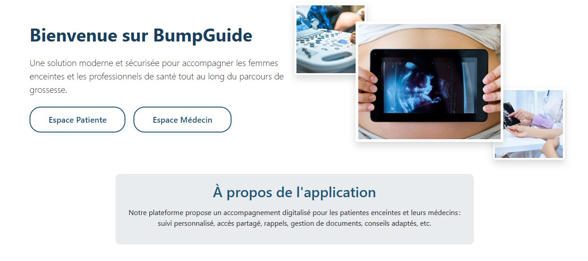

Contexte et Objectifs
L'objectif était de construire une application web complète, de la gestion de la base de données à l'interface utilisateur. BumpGuide est un outil de suivi qui doit être fiable, simple et rassurant pour l'utilisateur. Ce projet démontre ma capacité à gérer la logique back-end (Flask/SQLAlchemy) tout en garantissant une expérience utilisateur de qualité (UI/UX).
1. Le Défi de l'Expérience Utilisateur (UX)
Le principal défi UX était de traduire des données potentiellement complexes (suivi de santé, données de croissance) en un tableau de bord clair, intuitif et visuellement engageant. L'utilisateur doit pouvoir comprendre son suivi en un coup d'œil, sans être submergé par les chiffres.
La page d'accueil de BumpGuide, conçue pour rassurer l'utilisateur et séparer clairement les espaces (Patient/Médecin).
a. Design d'Interface (UI) et Hiérarchie Visuelle
J'ai utilisé Bootstrap pour construire une interface mobile-first. L'accent a été mis sur la hiérarchisation claire des données médicales afin qu'elles soient simples à interpréter pour les utilisateurs non-professionnels.
- L'utilisation de cartes (cards) et de graphiques simples pour présenter l'évolution du poids et de la tension.
- Un chemin de navigation clair entre l'enregistrement, la consultation et la modification des données.
Tableau de bord des suivis du poids et de la tension : utilisation de graphiques et de codes couleurs pour la clarté, un élément clé pour l'interprétation des données par l'utilisateur.
2. La Solution Technique (Développement Full-Stack)
Ce projet a nécessité une maîtrise du développement Full-Stack pour gérer le cycle de vie complet de l'application, du serveur à la base de données.
a. Le Backend Solide (Python et Flask)
Le moteur de l'application est basé sur le framework Flask (Python). J'ai développé toute la logique de l'application, y compris :
- Gestion des sessions utilisateur (connexion, déconnexion).
- Routage et gestion des requêtes HTTP.
3. Conclusion : La Conception de Systèmes Fonctionnels
BumpGuide est une preuve solide de ma capacité à :
- Concevoir une UX/UI efficace : Rendre l'information complexe simple et digeste, compétence essentielle pour les plateformes d'accompagnement de coachs.
- Développer un système Full-Stack : Bâtir des outils autonomes et robustes de A à Z (Backend + Frontend).
- Gérer la logique de données : Organiser l'information pour qu'elle soit fiable, permettant aux experts de prendre des décisions éclairées.